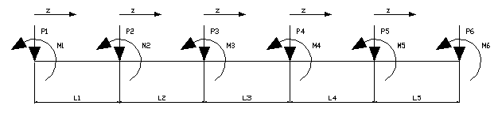
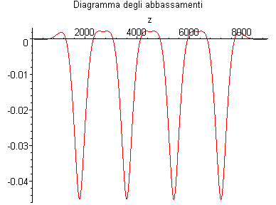
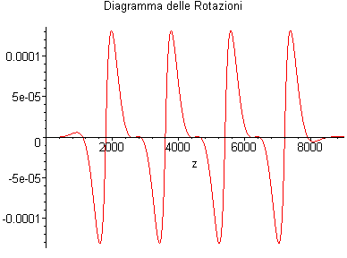
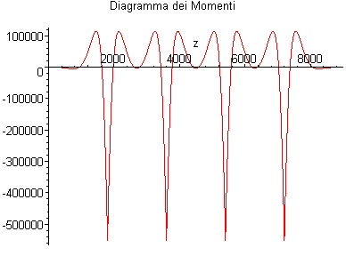
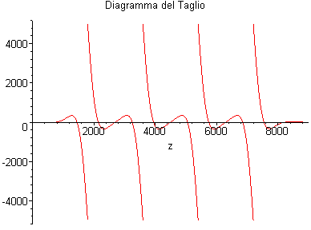
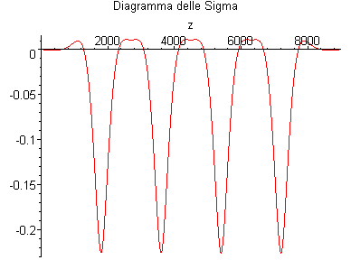
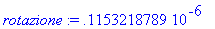

Trave di Fondazione su Suolo Elastico alla Winkler
G.Piluso - Febbraio 2004
Si assume il segno positivo per:
1 - gli spostamenti verso il basso;
2 - le forze concentrate verso il basso;
3 - il caricodistribuito verso il basso;
4 - i momenti concentrati antiorari.

>
Inizializzazione
>
restart:
with(plottools):
with(plots):
Ingresso Dati
>
NCampate:=5:
NCost:=NCampate*4:
k:=5.0:
q:=0.0:
B:=100.0:
E:=200000.0:
J:=1500000.0:
L[1]:=1800.0:
L[2]:=1800.0:
L[3]:=1800.0:
L[4]:=1800.0:
L[5]:=1800.0:
P[1]:=0.0: M[1]:=0.0:
P[2]:=10000.0: M[2]:=0.0:
P[3]:=10000.0: M[3]:=0.0:
P[4]:=10000.0: M[4]:=0.0:
P[5]:=10000.0: M[5]:=0.0:
P[6]:=0.0: M[6]:=0.0:
>
Alcuni calcoli preliminari
>
beta:=k*B:
alpha:=(beta/(4*E*J))^(1/4):
LL[0]:=0.0:
for i from 1 to NCampate do
LL[i]:=LL[i-1]+L[i];
end do:
# Lunghezza totale trave
Ltot:=LL[NCampate]:
>
Soluzione generale dell'equazione differenziale
>
ik:=0:
for i from 1 to NCampate do
ww[i]:=q/beta+C[ik+1]*exp(alpha*z)*sin(alpha*z)+C[ik+2]*exp(alpha*z)*cos(alpha*z)+C[ik+3]*exp(-alpha*z)*sin(alpha*z)+C[ik+4]*exp(-alpha*z)*cos(alpha*z);
ik:=ik+4;
end do:
for i from 1 to NCampate do
w[i]:=unapply(ww[i],z);
end do:
>
Derivate 1°, 2° e 3° ordine
>
for i from 1 to NCampate do
dw[i,1]:=diff(w[i](z),z):
dw[i,2]:=diff(w[i](z),z$2):
dw[i,3]:=diff(w[i](z),z$3):
end do:
>
Condizioni al contorno
>
eq[1]:=subs(z=0,dw[1,2])=-M[1]:
eq[2]:=subs(z=0,dw[1,3])=-P[1]:
ik:=3:
for i from 1 to NCampate-1 do
eq[ik]:=subs(z=L[i],w[i](z))=subs(z=0,w[i+1](z)):
ik:=ik+1;
eq[ik]:=subs(z=L[i],dw[i,1])=subs(z=0,dw[i+1,1]):
ik:=ik+1;
eq[ik]:=subs(z=L[i],dw[i,2])-subs(z=0,dw[i+1,2])=-M[i+1]:
ik:=ik+1;
eq[ik]:=subs(z=L[i],dw[i,3])-subs(z=0,dw[i+1,3])=-P[i+1]:
ik:=ik+1;
end do:
eq[NCost-1]:=subs(z=L[NCampate],dw[NCampate,2])=-M[NCampate+1]:
eq[NCost]:=subs(z=L[NCampate],dw[NCampate,3])=-P[NCampate+1]:
>
Risoluzione del sistema di equazioni
> s1:=solve({seq(eq[i],i=1..NCost)},{seq(C[i],i=1..NCost)}):
>
Traccia la trave
> p[0]:=plot(0,z=0..Ltot):
>
Traccia il diagramma degli abbassamenti
>
for i from 1 to NCampate do
pw[i]:=subs(s1,w[i](z));
end do:
for i from 1 to NCampate do
p[i]:=plot(-pw[i]/(E*J),z=0..L[i]);
end do:
for i from 2 to NCampate do
p[i]:=translate(p[i],LL[i-1],0):
end do:
display([p[0],seq(p[i],i=1..NCampate)],title="Diagramma degli abbassamenti");

>
Traccia il diagramma delle rotazioni
>
for i from 1 to NCampate do
pf[i]:=subs(s1,dw[i,1]);
end do:
for i from 1 to NCampate do
p_phi[i]:=plot(-pf[i]/(E*J),z=0..L[i]);
end do:
for i from 2 to NCampate do
p_phi[i]:=translate(p_phi[i],LL[i-1],0):
end do:
display([p[0],seq(p_phi[i],i=1..NCampate)],title="Diagramma delle Rotazioni");

>
Traccia il diagramma dei momenti
>
for i from 1 to NCampate do
pm[i]:=subs(s1,dw[i,2]);
end do:
for i from 1 to NCampate do
p_Mom[i]:=plot(pm[i],z=0..L[i]);
end do:
for i from 2 to NCampate do
p_Mom[i]:=translate(p_Mom[i],LL[i-1],0):
end do:
display([p[0],seq(p_Mom[i],i=1..NCampate)],title="Diagramma dei Momenti");

>
Traccia il diagramma del taglio
>
for i from 1 to NCampate do
pt[i]:=subs(s1,dw[i,3]);
end do:
for i from 1 to NCampate do
p_T[i]:=plot(pt[i],z=0..L[i]);
end do:
for i from 2 to NCampate do
p_T[i]:=translate(p_T[i],LL[i-1],0):
end do:
display([p[0],seq(p_T[i],i=1..NCampate)],title="Diagramma del Taglio");

>
Traccia il diagramma delle sigma
>
for i from 1 to NCampate do
ps[i]:=subs(s1,k*w[i](z)/(E*J));
end do:
for i from 1 to NCampate do
p_sigma[i]:=plot(-ps[i],z=0..L[i]);
end do:
for i from 2 to NCampate do
p_sigma[i]:=translate(p_sigma[i],LL[i-1],0):
end do:
display([p[0],seq(p_sigma[i],i=1..NCampate)],title="Diagramma delle Sigma");

>
Query
>
campata:=1;
ascissa:=1800.0;
abbassamento:=evalf(subs(z=ascissa,pw[campata]/(E*J)));
rotazione:=evalf(subs(z=ascissa,pf[campata]/(E*J)));
momento:=evalf(subs(z=ascissa,pm[campata]));
taglio:=evalf(subs(z=ascissa,pt[campata]));
sigma:=evalf(subs(z=ascissa,k*pw[campata]/(E*J)));
